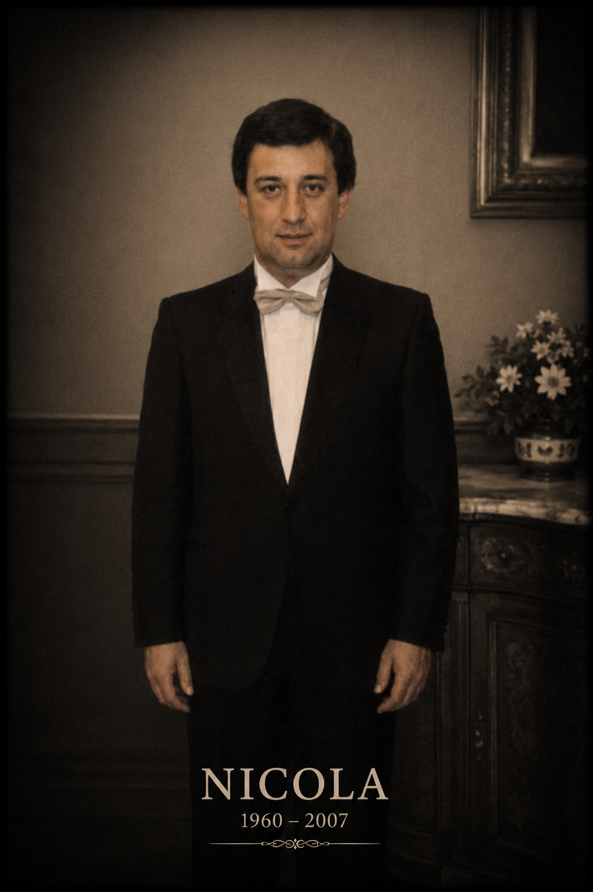

Fotografia originale restaurata digitalmente tramite AI · Archivio Fotografico Cardiello.
Dati principali
| Nome | Nicola Cardiello |
|---|---|
| Nascita | 12 ottobre 1960 |
| Luogo di nascita | Battipaglia |
| Morte | 4 giugno 2007 |
| Luogo di morte | Eboli |
| Padre | Angelo Cardiello |
| Madre | Vincenza Ferrara |
| Professione | Impiegato del Pastificio Pezzullo |
| Coniuge | Anna Maria Albano |
| Matrimonio | 3 maggio 1987 |
| Luogo del matrimonio | Eboli |
| Figli documentati | 2 |
Biografia
Nicola Cardiello nacque il 12 ottobre 1960 a Battipaglia da Angelo Cardiello e Vincenza Ferrara.
Crebbe nella casa di famiglia sulla Strada Statale 18 e seguì le orme paterne lavorando come impiegato presso il Pastificio Pezzullo di Eboli.
Il 3 maggio 1987 sposò Anna Maria Albano, con la quale formò la propria famiglia.
Morì prematuramente il 4 giugno 2007 all'età di 46 anni.
Coniuge
Anna Maria Albano
| Padre | Vincenzo Albano |
|---|---|
| Madre | Carmela Contrasto |
| Matrimonio | 3 maggio 1987 |
Anna Maria Albano è moglie di Nicola Cardiello e madre dei suoi figli.
Figli documentati
| Nome |
|---|
| Angelo |
| Enza |
Professione e condizione sociale
Nicola Cardiello lavorò come impiegato presso il Pastificio Pezzullo di Eboli, mantenendo un legame professionale con la stessa realtà lavorativa già presente nella vita del padre Angelo.
Luoghi
- Battipaglia
- Eboli
- Strada Statale 18
- Pastificio Pezzullo
Fonti
- Registro Battesimi
- Registro Matrimoni
- Registro Morti
- Documentazione familiare
Note genealogiche
Nicola Cardiello rappresenta la decima generazione documentata della linea agnatizia esposta. Con i figli Angelo ed Enza la storia della famiglia prosegue nel XXI secolo, mantenendo viva una continuità genealogica documentata che attraversa oltre tre secoli e mezzo di storia tra San Pietro al Tanagro ed Eboli.
Documenti e approfondimenti
Sezione in aggiornamento. Saranno inseriti documenti anagrafici, fotografie di famiglia e materiali relativi alla memoria familiare contemporanea.